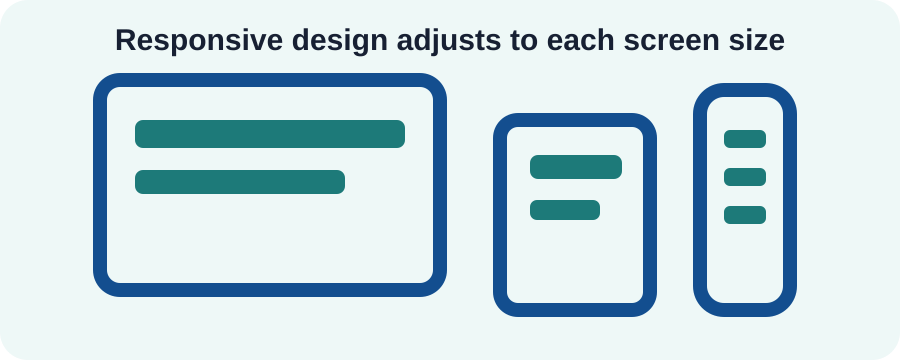

Mobile Friendly Design
This site uses a viewport meta tag, flexible layout grids, readable font sizes, and a stacked mobile navigation menu.
IT 3203 Milestone 3
A responsive educational website about Search Engine Optimization.
Technical SEO focuses on the behind-the-scenes parts of a website. A site should load quickly, use clean HTML, work on mobile devices, and be easy for search engines to crawl.
Mobile design is a major part of technical SEO because many users search on phones. Responsive design lets the same page work across different screen sizes.
This site uses a viewport meta tag, flexible layout grids, readable font sizes, and a stacked mobile navigation menu.
The website uses simple local files, lightweight SVG graphics, and no heavy third-party libraries.
